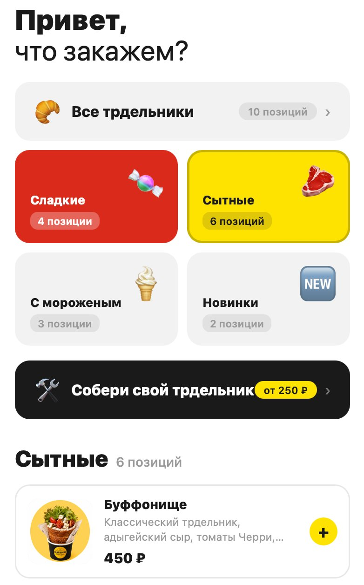
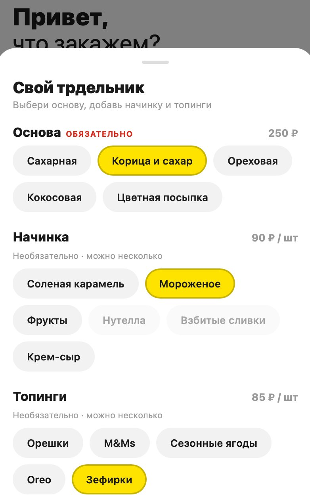
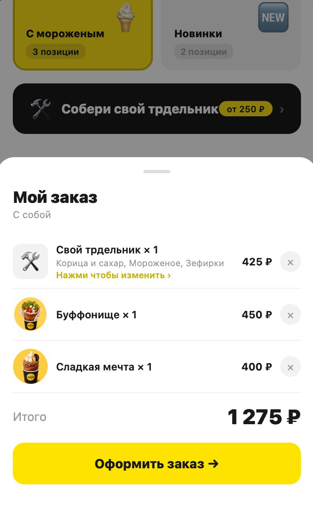
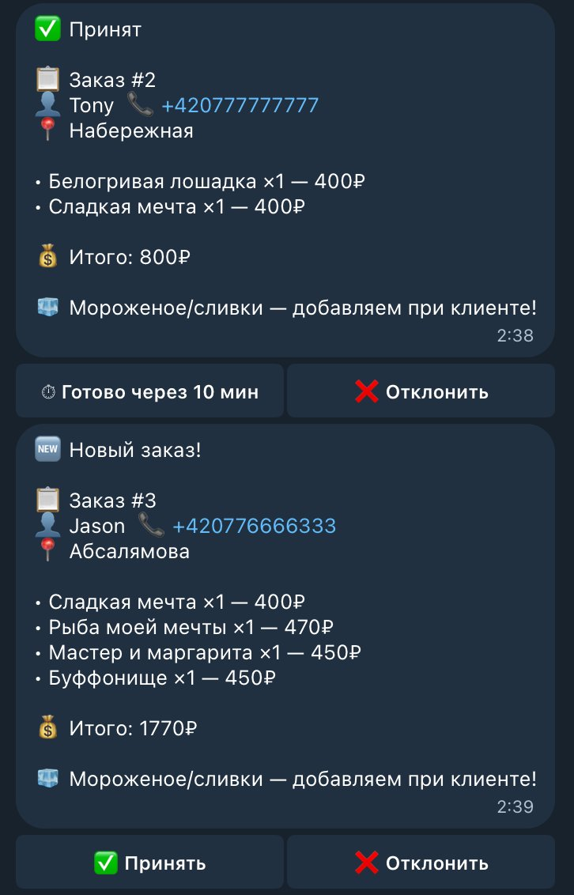
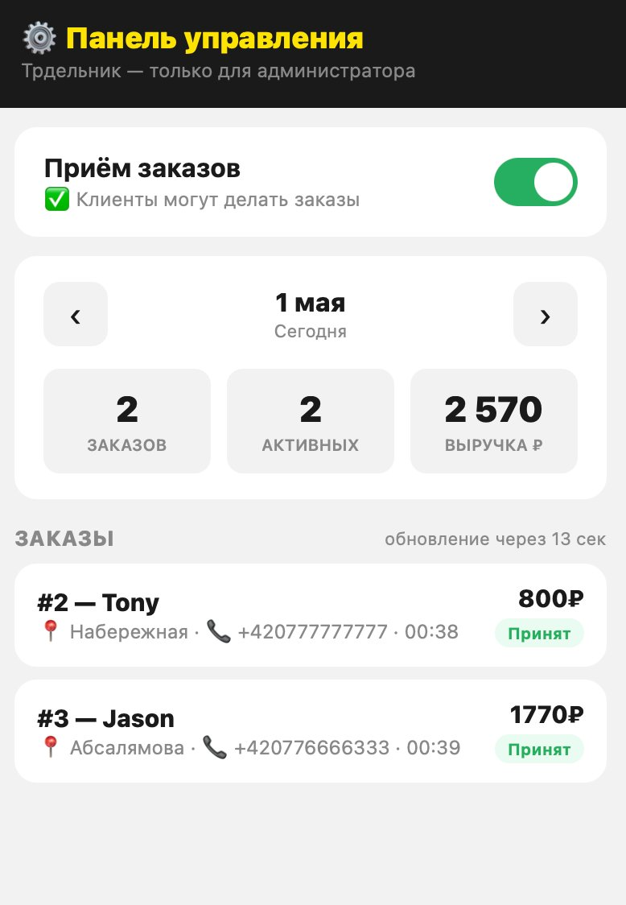
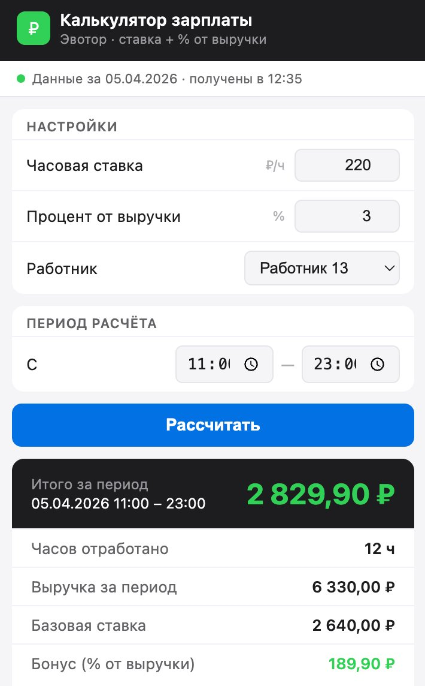
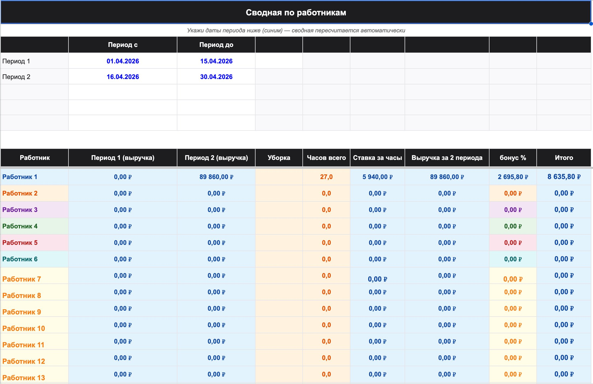

Vaši konkurenti už
to nedělají ručně
Ukažte mi svůj byznys — najdeme kde ztrácíte peníze na manuální práci. Každý případ níže — skutečný klient, skutečná čísla.
Insight: agregátoři berou nejen provizi — berou zákaznickou základnu. Vlastní systém buduje opakované objednávky, které se časem zhodnocují.





Insight: 6 hodin účetního jsou ~3 000 CZK přímých nákladů plus riziko chyb vedoucích ke konfliktům se zaměstnanci. Vrátí se za první měsíc.


Insight: ztráta 5% účtenek ze 400 jsou slepá místa ve financích za desítky tisíc korun. Automatizace zcela eliminuje lidský faktor.
ztrácíte peníze
právě teď
Konzultace 60 minut — bez prodeje, bez závazků. Odejdete s konkrétním seznamem co lze u vás automatizovat.
Obvykle odpovídám do hodiny